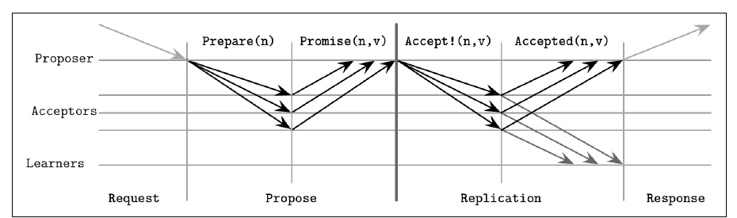
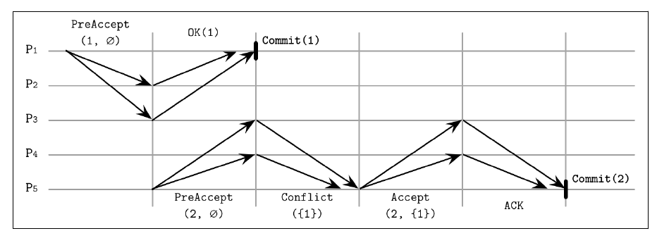
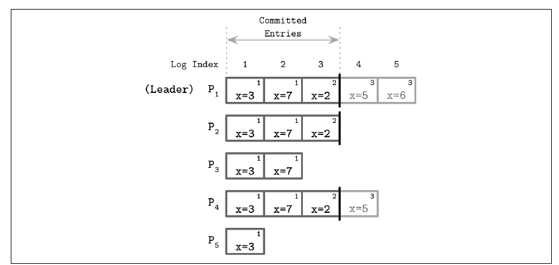
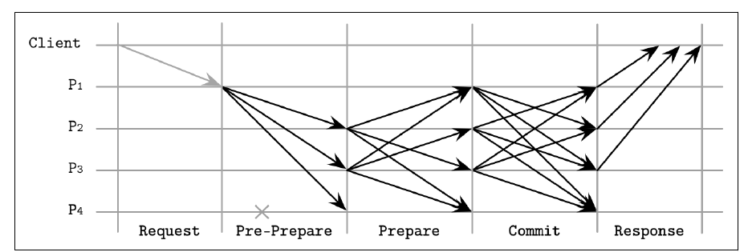

Chapter 14 · pp. 279–312
Consensus
Database Internals, 1st Edition
The final chapter combines links, failure models, failure detectors, leader election and consistency into distributed consensus: processes agreeing on a value proposed by one of them, even when some crash (p. 279). FLP rules out guaranteed consensus in bounded time in a fully asynchronous system. Consensus algorithms therefore assume asynchrony and guarantee safety, while an external failure detector provides liveness. Inaccurate detection means waiting, or restarting after a false suspicion (p. 279).
The chapter moves through:
- Broadcast: best effort, then reliable flooding, then atomic broadcast, which is reliable delivery in total order. It covers virtual synchrony and ZAB, ZooKeeper's protocol (pp. 280–285).
- Paxos: the classic algorithm, quorums and failure scenarios (pp. 285–291).
- Paxos variants: Multi-Paxos, Fast Paxos, EPaxos, Flexible Paxos and the generalized solution with write-once registers (pp. 291–300).
- Raft (pp. 300–305).
- Byzantine consensus with PBFT (pp. 305–309).
The chapter’s own outline (from the book’s table of contents)
- Broadcast — p. 280
- Atomic Broadcast — p. 281
- Virtual Synchrony — p. 282
- Zookeeper Atomic Broadcast (ZAB) — p. 283
- Paxos — p. 285
- Paxos Algorithm — p. 286
- Quorums in Paxos — p. 287
- Failure Scenarios — p. 288
- Multi-Paxos — p. 291
- Fast Paxos — p. 292
- Egalitarian Paxos — p. 293
- Flexible Paxos — p. 296
- Generalized Solution to Consensus — p. 297
- Raft — p. 300
- Leader Role in Raft — p. 302
- Failure Scenarios — p. 304
- Byzantine Consensus — p. 305
- PBFT Algorithm — p. 306
- Recovery and Checkpointing — p. 309
- Summary — p. 309
From the book
Introduction
A process is correct if it hasn't crashed and keeps executing algorithm steps. Consensus is useful for ordering events and keeping participants consistent: the system moves from one value to the next without losing certainty about what clients observed (p. 279).
| Property | Meaning (p. 280) |
|---|---|
| Agreement | All correct processes decide the same value |
| Validity | The decided value was proposed by one of the processes |
| Termination | All correct processes eventually decide |
From the book
Broadcast
Broadcast disseminates information among processes; gossip (Ch. 12) is one form. It's used for replication when a coordinator distributes data to all participants (p. 280).
- Best-effort broadcast: the sender alone makes sure messages are delivered. If it crashes partway, the broadcast fails silently and leaves some nodes with the message and others without (pp. 280–281).
- Reliable broadcast: all correct processes receive the same messages even if the sender crashes. The naive version uses a failure detector plus a fallback where every receiver forwards to everyone, flooding the network with N² messages (Figure 14-1) (p. 281).
From the book
Atomic broadcast
Flooding guarantees delivery, not order. Atomic broadcast, also called total order multicast, guarantees both (p. 281):
- Atomicity: all non-failed processes deliver a message, or none do.
- Order: all non-failed processes deliver messages in the same order (p. 282).
Atomic broadcast
Virtual synchrony
Atomic broadcast works on a static group; virtual synchrony delivers totally ordered messages to a dynamic group (Birman) (p. 282).
- Every message belongs to the group view it was sent in. Joins, leaves and failures change the view, and the change is announced to all members (p. 282).
- Receipt, when one member gets a message, differs from delivery, when all members have it. A message sent in one view can only be delivered in that view, so views act as barriers that broadcasts can't cross (p. 282).
- Some total-order algorithms use a single sequencer: simpler and faster, but liveness depends on detecting its failure (pp. 282–283).
- Despite its soundness, virtual synchrony isn't widely used in commercial systems (p. 283).
Atomic broadcast
ZooKeeper Atomic Broadcast (ZAB)
ZooKeeper, a hierarchical distributed key-value store, uses ZAB for total order and atomic delivery (p. 283). Processes are a temporary leader or followers; non-leaders forward client requests to the leader (p. 283). Time is split into epochs with unique, monotonically increasing numbers, and each epoch has at most one leader. Any election algorithm can pick a prospective leader, because the later steps guarantee safety (p. 283).
sequenceDiagram
participant L as Prospective leader
participant F as Followers
Note over L,F: 1. Discovery
L->>F: what is your latest epoch?
F-->>L: epoch + last txn id (stop accepting older epochs)
Note over L,F: 2. Synchronization
L->>F: I lead new epoch e, here is the missing history
F-->>L: ack (reject other would-be leaders of e)
Note over L,F: 3. Broadcast
L->>F: proposal
F-->>L: ack (quorum)
L->>F: commitThe vault's version of Figure 14-2 (pp. 283–284).
- In synchronization, the leader brings followers to the same history and delivers committed proposals from earlier epochs before any new ones (pp. 283–284).
- Broadcast is like 2PC without aborts: votes are just acknowledgments, and proposals from leaders of wrong epochs aren't acknowledged. It continues until the leader crashes, is partitioned, or is suspected (p. 284).
- Heartbeats run in both directions. A leader without heartbeats from a quorum steps down, and a follower that suspects the leader starts an election (p. 284).
- The leader sends the next message only after the previous one is acknowledged, and re-delivery in order has no extra side effects (p. 284).
- Recovery is efficient: followers report their highest committed proposal, and the leader copies from the single most up-to-date node. Broadcast takes two message rounds (pp. 284–285).
From the book
Paxos
Atomic broadcast is equivalent to consensus in an asynchronous system with crash failures (Chandra and Toueg) (p. 285). Lamport introduced Paxos in "The Part-Time Parliament" (1998), then restated it in "Paxos Made Simple" (2001) (p. 285).
| Role | Job (p. 285) |
|---|---|
| Proposer | Takes client values, creates proposals, collects votes |
| Acceptor | Votes to accept or reject. Several exist for fault tolerance; a majority is enough for liveness |
| Learner | A replica storing accepted outcomes |
Implementations usually colocate the roles in one process. Every proposal has a client value and a unique, monotonically increasing proposal number, often an (id, timestamp) pair where node IDs break ties (p. 285).
Paxos
Paxos algorithm
There are two phases: voting (propose), where proposers compete for leadership, and replication, where the winner distributes the value (p. 286). Votes can split between proposers, forcing a restart (p. 286).


| Message | Acceptor rule (pp. 286–287) |
|---|---|
| Prepare(n) | If no higher-numbered Prepare has been answered, promise not to accept anything lower than n. If a proposal was already accepted, reply Promise(m, v_accepted). If a higher Prepare was answered, tell the proposer. A later Prepare may be answered if its number is higher |
| Accept!(n, v) | Accept unless a Prepare(m) with m > n has been answered. On rejection, send back the highest number seen so the proposer can catch up |
In phase 2, the proposer must use the value of the highest-numbered proposal among the replies, or its own if none was accepted (p. 286). Once a value is accepted by even one acceptor, later proposers have to converge on it; that's why acceptors report what they've accepted (p. 287). Learners know the decision after hearing from a majority of acceptors, and acceptors can notify them as soon as they accept (p. 287).
Paxos
Quorums in Paxos
A quorum is the minimum number of votes for an operation, usually a majority. Any two majorities share at least one participant, which acts as an arbiter (pp. 287–288).
- Safety holds under any number of failures.
- Liveness holds with f failures if there are 2f + 1 processes (p. 288).
- Quorums describe blocking properties. You can send to more nodes, including speculative redundant queries, but you only need to wait for a quorum (p. 288).
Paxos
Failure scenarios
| Figure | What happens (pp. 288–290) |
|---|---|
| 14-4 | P1 sends V1 only to A1 and crashes. P2 with number 2 reaches quorum {A1, A2}, sees V1 and commits V1. The original proposer, and its client, may never learn the result (note 1) |
| 14-5 | Same start, but P2's quorum is {A2, A3}. It never sees V1 and commits its own value, even though A1 holds V1 |
| 14-6 | A1 accepts V1 and then fails. P2's quorum doesn't overlap A1, so P2 commits its value. Later proposers that do reach A1 prefer the more recent accepted proposal |
| Dueling proposers | Competing Prepares keep invalidating each other. Fix with random backoff |
Paxos tolerates acceptor failures only while enough remain to form a majority (p. 291).
Try it
Paxos, round by round
Open full screen ↗ · the simulation is the vault’s own model of the mechanism the book describes.
Paxos
Multi-Paxos
Classic Paxos runs a propose round for every value. Multi-Paxos adds a distinguished proposer (leader) that keeps its position and goes straight to replication (p. 291).
- Reads: classic Paxos reads by running a round, because the last known proposer may be stale. Multi-Paxos has the same risk if a new leader exists, so some implementations use leases. The leader renews them periodically, and participants promise not to accept other leaders' proposals during the lease (Chandra et al.) (p. 291).
- Leases are a performance optimization that relies on bounded clock synchrony. If clocks drift too far, linearizability is lost (p. 291).
- Multi-Paxos is a replicated log. A durable log survives crashes, and it is truncated after snapshotting, with snapshot and truncation applied atomically (pp. 291–292).
- Single-decree Paxos is a write-once register; Multi-Paxos is an append-only log of such registers (Rystsov). Active Disk Paxos and CASPaxos offer read-modify-write registers instead (p. 292).
Paxos
Fast Paxos
Any proposer can contact acceptors directly, saving a round trip. The cost is a quorum of 2f + 1 instead of f + 1, and 3f + 1 acceptors (Junqueira et al.; Lamport) (p. 292).
- In a fast round, a coordinator that could pick any value sends Any, and acceptors treat proposers' values as if they came from the coordinator (p. 292).
- Two proposers going fast at once cause a collision: acceptors take different values, and the coordinator has to start a recovery round (p. 293).
- Under high request rates, collisions and the larger replica set can make Fast Paxos slower than classic Paxos (p. 293).
Paxos
Egalitarian Paxos
A single leader must be re-elected when it fails and can become a bottleneck. Partitioning helps, but multipartition operations then need atomic commitment (pp. 293–294). EPaxos (Moraru et al.) has a per-command leader and orders commands through dependencies. It is the first implementation of Lamport's Generalized Paxos, where non-conflicting writes commit independently (p. 294).
- A Pre-Accept carries the dependencies (potentially interfering commands) and a sequence number larger than any known dependency's (p. 294).
- It goes to a fast quorum of ⌈3f/4⌉ replicas, which update the dependencies from their own logs (p. 294).
- Fast path: the dependency lists agree, so commit. Slow path: they differ, so merge the dependencies, raise the sequence number and send Accept to ⌊f/2⌋ + 1 replicas before committing (pp. 294–295).
- In Figure 14-8, P1 commits on the fast path; P5 learns about command 1 from P3 and runs Accept(2, {1}) (p. 295).


Commands interfere if their execution order matters. Replicas build a dependency graph and execute in reverse dependency order, which is rare for most workloads (p. 296). Sequence numbers combine a configuration epoch, a node-local counter and the replica ID. Stale proposals are nacked with the newer state (p. 296).
Paxos
Flexible Paxos
Do all quorums have to intersect? In Paxos, only the phase 1 (election) quorum has to overlap the phase 2 (accept) quorum: Q₁ + Q₂ > N (Howard et al.) (pp. 296–297). Since phase 2 is far more common, Q₂ can be as small as N/2 if Q₁ = N − Q₂ + 1 (p. 297).
- With five acceptors, an election quorum of 4 allows replication quorums of 2, even on disjoint pairs. Any new leader is known to at least one acceptor in each pair (p. 297).
- This trades availability for latency. Elections need more live nodes, but a stable leader keeps replicating through up to N − Q₂ failures (p. 297).
- Vertical Paxos separates a smaller read quorum for lower-numbered proposals from a larger write quorum; Lampson's out and decision quorums are similar (p. 297).
Paxos
Generalized solution to consensus
Howard and Mortier restate single-decree Paxos as write-once registers. The book notes there were no known implementations yet (pp. 297–298).
- A register can be unwritten, hold a value, or hold nil. Registers with the same index on different servers form a register set with one or more quorums (p. 298).
- A quorum's state is Any or Maybe v (undecided), or None or Decided v (decided) (p. 298).
- Rules: output a value only after reading it from a quorum in the same register set; write only values received as input or read from a register; never let two quorums decide different values; never override earlier register sets' decisions (p. 298).
- Phase 1: P1A(register). Servers set lower unwritten registers to nil and return what's written. With a majority, take the value from the highest-indexed non-empty register, or your own. Phase 2: P2A(register, value) to all servers; a majority of responses means decided (pp. 298–299).
- Setting lower registers to nil plays the role of Paxos's higher proposal numbers. It's simpler to reason about because it uses the last known state instead of actor interactions (p. 300).
From the book
Raft
Raft (Ongaro and Ousterhout, 2014) set out to be understandable and came with a reference implementation, LogCabin (p. 300). Identical logs applied in the same order give the same state. Raft makes the leader a first-class citizen, much as atomic broadcast and Multi-Paxos do (p. 300).
| Role | (p. 301) |
|---|---|
| Candidate | Tries to collect a majority of votes. A split vote starts a new term and a new election |
| Leader | Handles client requests for a term, a monotonically numbered period of any length |
| Follower | Persists entries and answers the leader and candidates, like a Paxos acceptor and learner. Every process starts here |
Terms (epochs) give a global partial order without synchronized clocks. A command is identified by its term and its message number within the term. A participant that sees a higher term updates to it, and the higher term wins conflicts (p. 301).
- Leader election: RequestVote carries the candidate's term, its last known term and its last log entry ID. Each process votes for at most one candidate (p. 302).
- Heartbeats: a follower that hears nothing for an election timeout starts an election (p. 302).
- AppendEntries: carries the leader's term, the index and term of the preceding entry, and new entries (p. 302).
Raft
Leader role in Raft
A follower denies its vote to a candidate whose log is less up to date: a lower last term, or a shorter log when the terms are equal. A leader therefore holds every committed entry. Because entries are replicated in order, comparing the last entries is enough (p. 302). The leader appends to its own log and sends to followers in parallel. Once enough followers acknowledge, the entry is committed (pp. 302–303). In Figure 14-11, x = 8 is appended, replicated to a majority, committed locally, and then the commit is propagated (p. 303). Committing an entry commits everything before it, and only the leader decides commitment (p. 303).


Raft
Failure scenarios
- Split votes are made unlikely by randomized timers: one candidate starts earlier and wins (p. 304).
- The leader retries unacknowledged messages and may send in parallel. Followers deduplicate by sequence ID (p. 304).
- A follower rejects entries whose preceding (index, term) doesn't match its log. The Log Matching property follows: same term and index means same command and identical prefixes (p. 304).
- Committed entries may still look in progress to a client, which is harmless; retry until committed (p. 304).
- A new leader finds the highest entry it shares with each follower, has the follower discard uncommitted entries after it, and overwrites them with its own. The leader's log is never rewritten, only appended to (p. 305).
| Raft guarantee (p. 305) |
|---|
| At most one leader per term |
| A leader only appends; it never removes or reorders |
| Committed entries appear in all later leaders' logs |
| (term, message) IDs are never reused for a different entry |
Raft is used by CockroachDB, etcd and Consul (p. 305).
From the book
Byzantine consensus
The algorithms so far assume nodes act in good faith, which allows fewer participants and fewer round trips (p. 305). Adversarial deployments, but also bugs, misconfiguration, hardware faults and corruption, call for Byzantine tolerance. Most such algorithms need N² messages per step, because every node cross-validates every other (pp. 305–306). PBFT (Castro and Liskov) assumes independent failures and weak synchrony. Communication is encrypted, and replicas know each other's public keys (p. 306).
Byzantine consensus
PBFT algorithm
Safety and liveness need at most (n − 1)/3 faulty replicas, so n = 3f + 1. There may be f faulty replicas plus f unresponsive but honest ones, and the responses from non-faulty replicas must still outnumber the faulty ones (p. 306).
- Views: the primary is replica v mod N, and the rest are backups. A client waits for f + 1 matching replies (p. 306).


- Digests keep prepare messages small; collision resistance and signatures make them trustworthy (p. 307).
- View change: replicas that suspect the primary stop responding, except to checkpoint and view-change messages, and broadcast a view change. The new primary starts the view after 2f view-change events (p. 308).
- Optimizations: clients can accept 2f + 1 matching tentative replies, falling back to f + 1 non-tentative ones. Read-only operations take one round trip with 2f + 1 matching responses (p. 308).
Byzantine consensus
Recovery and checkpointing
Messages stay in a stable log until at least f + 1 nodes have executed them. Recovering replicas must verify the state they receive, because recovery could otherwise be an attack vector (p. 309). Every N requests, the primary broadcasts a stable checkpoint: the latest sequence number and a state digest. 2f + 1 responses prove it, and all older messages can be discarded (p. 309). Usually authenticated, encrypted links are enough; PBFT-style algorithms are needed when there's no trust between the parts of a system (p. 309).
From the book
Summary
| Variant | Improves (pp. 309–310) |
|---|---|
| Multi-Paxos | Keeps the proposer and replicates many values |
| Fast Paxos | Fewer messages through fast rounds from any proposer |
| EPaxos | Orders by resolving dependencies between commands |
| Flexible Paxos | Only the phase 1 and phase 2 quorums must intersect |
| Raft | Leadership is first-class; separates log replication, leader election and safety |
| PBFT | Cross-validation for adversarial environments |
Recap
Trade-offs at a glance
| Nodes for f faults | Quorum | Leader | Messages per decision | |
|---|---|---|---|---|
| Classic Paxos | 2f + 1 | Majority (f + 1) | Per round | 2 round trips |
| Multi-Paxos / Raft / ZAB | 2f + 1 | Majority | Long-lived | 1 round trip under a stable leader |
| Fast Paxos | 3f + 1 | 2f + 1 | Coordinator, bypassed in fast rounds | Fewer steps; collisions cost extra |
| EPaxos | 2f + 1 | Fast ⌈3f/4⌉, slow ⌊f/2⌋ + 1 | Per command | Fast path 1 round trip |
| Flexible Paxos | N | Q₁ + Q₂ > N | Long-lived | Small Q₂ cuts replication latency |
| PBFT | 3f + 1 | 2f, then 2f + 1 | Primary per view | O(N²) |
Recap
Key takeaways
- Three properties: agreement, validity, termination. Validity rules out the trivial "always decide a default" algorithm (p. 280).
- Atomic broadcast is equivalent to consensus in an asynchronous system with crash failures (p. 285).
- ZAB uses epochs and three phases: discovery, synchronization, broadcast. Broadcast is like 2PC without aborts (pp. 283–284).
- Paxos proposers must adopt the highest-numbered accepted value they hear about in phase 1. That's how a value accepted by even one acceptor can survive its proposer's crash (pp. 286–289).
- Paxos is safe under any number of failures and live with f failures out of 2f + 1 (p. 288).
- Multi-Paxos skips phase 1 under a stable leader. Leases let it read locally, but they are a performance optimization relying on bounded clock drift, not a correctness guarantee (p. 291).
- Flexible Paxos needs only Q₁ + Q₂ > N: the election and replication quorums must intersect, not every pair of quorums (pp. 296–297).
- Raft elects only candidates with every committed entry, so log entries flow only from leader to followers (pp. 302–303).
- PBFT needs n = 3f + 1 replicas, a 2f prepare quorum and a 2f + 1 commit quorum; clients wait for f + 1 matching replies (pp. 306–308).
Practice
Check yourself
Questions and answers are the vault's, written from the notes above; answers cite the book's pages.
1Why is validity needed alongside agreement?Show answer
Without it, every process could always decide a fixed default value: unanimous but useless (p. 280).
2How many messages does naive reliable broadcast use, and why?Show answer
About N²: every process that receives the message forwards it to every other process, so delivery survives a sender crash (p. 281).
4Why are Multi-Paxos leases not a correctness guarantee?Show answer
They depend on bounded clock drift. If clocks drift too far, a leader may think its lease is valid after others consider it expired, and linearizability breaks (p. 291).
5Five acceptors; replication should need only two acknowledgments. How big must the election quorum be in Flexible Paxos?Show answer
Q₁ ≥ N − Q₂ + 1 = 4, so Q₁ + Q₂ > N (p. 297).
6What does a Fast Paxos collision cost?Show answer
Acceptors take different values, so the coordinator must start a new round to make them converge, which raises latency, especially under high request rates (p. 293).
7When does an EPaxos leader take the slow path?Show answer
When fast-quorum replies are missing or their dependency lists disagree. It merges the dependencies, raises the sequence number and runs Accept on ⌊f/2⌋ + 1 replicas (pp. 294–295).
8Why do Raft log entries only flow from leader to followers?Show answer
Followers refuse to vote for candidates with less up-to-date logs, so any elected leader already holds every committed entry (pp. 302–303).
9Why does PBFT need 3f + 1 replicas?Show answer
Up to f may be faulty and another f may be unresponsive though honest. The responses from honest replicas must still outnumber the faulty ones (p. 306).
Supplement
Beyond the book
Vault supplement — not from the book.
- Fast quorum sizes. The book's EPaxos fast quorum, ⌈3f/4⌉, is how it appears on p. 294. The EPaxos paper states it as F + ⌊(F + 1)/2⌋ replicas, including the command leader, for N = 2F + 1. Check the paper before relying on either number.
- Flexible Paxos by enumeration. The quorum-intersection lab lists every Q₁-sized and Q₂-sized subset of N acceptors and confirms that every pair intersects exactly when Q₁ + Q₂ > N. It also finds a disjoint pair as soon as the inequality fails.
- Raft in practice. Production Raft adds PreVote, which stops a partitioned node from disrupting the cluster with ever-higher terms, and joint consensus or single-server changes for membership. Both come from Ongaro's dissertation and appear in etcd/raft. For a Raft election-and-log simulation, see DDIA Ch. 10.
Next steps
Keep going
Run it
Flexible Paxos quorum intersection
Do all of Paxos's quorums have to be majorities? For 3 to 7 acceptors, this experiment enumerates every election (phase 1) quorum of size Q₁ and every replication (phase 2) quorum of size Q₂. It checks whether each pair always overlaps and prints a disjoint pair when one exists. It also shows how many failures each phase tolerates, and does the PBFT arithmetic for n = 3f + 1.
cd books/database-internals/lab/14-flexible-paxos
python3 flexible_paxos.pyConnections
- Run it: Flexible Paxos quorum intersection — enumerates quorum pairs for N = 3…7 and every (Q₁, Q₂), printing which configurations are safe, how many failures each phase tolerates, and the PBFT 3f + 1 arithmetic.
- Related chapters: 8. Introduction and Overview (FLP, failure models, Byzantine faults), 9. Failure Detection (liveness via detectors), 10. Leader Election (why election is consensus), 11. Replication and Consistency (R + W > N, linearizability), 13. Distributed Transactions (Paxos groups in Spanner and Calvin).